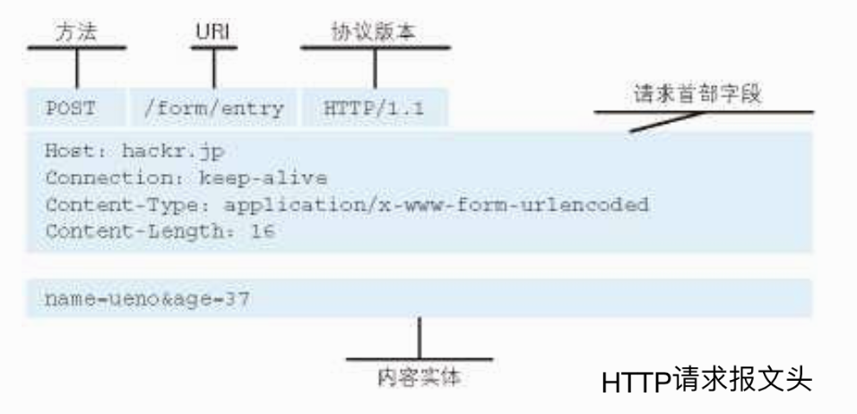
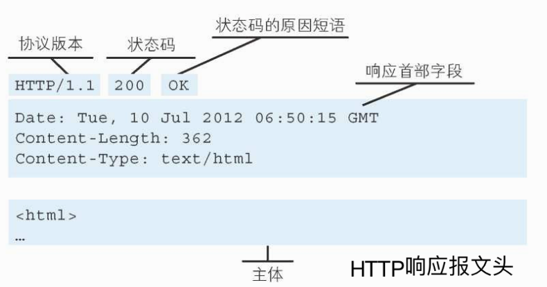

计算机网络知识点总结。
HTTP协议
HTTP构建在TCP/IP协议上，默认端口80，是无连接状态的。
HTTP报文
HTTP请求报文头如下所示

HTTP响应报文头如下所示

HTTP版本号的作用
版本号说明的是应用程序支持的最高HTTP版本，例如与HTTP 1.1的应用通信的HTTP 1.2应用知道它不支持HTTP 1.2的新特性，最多只能支持到HTTP 1.1的特性。
HTTP 1.0 / 1.1 / 2.0 的区别
HTTP 1.0 和 HTTP 1.1的区别
- 缓存处理：在HTTP1.0中主要使用header里的If-Modified-Since,Expires来做为缓存判断的标准，HTTP1.1则引入了更多的缓存控制策略例如Entity tag，If-Unmodified-Since, If-Match, If-None-Match等更多可供选择的缓存头来控制缓存策略。
- 带宽优化及网络连接的使用：HTTP1.0中，存在一些浪费带宽的现象，例如客户端只是需要某个对象的一部分，而服务器却将整个对象送过来了，并且不支持断点续传功能，HTTP1.1则在请求头引入了range头域，它允许只请求资源的某个部分，即返回码是206（Partial Content），这样就方便了开发者自由的选择以便于充分利用带宽和连接。
- 错误通知的管理：在HTTP1.1中新增了24个错误状态响应码，如409（Conflict）表示请求的资源与资源的当前状态发生冲突；410（Gone）表示服务器上的某个资源被永久性的删除。
- Host头处：在HTTP1.0中认为每台服务器都绑定一个唯一的IP地址，因此，请求消息中的URL并没有传递主机名（hostname）。但随着虚拟主机技术的发展，在一台物理服务器上可以存在多个虚拟主机（Multi-homed Web Servers），并且它们共享一个IP地址。HTTP1.1的请求消息和响应消息都应支持Host头域，且请求消息中如果没有Host头域会报告一个错误（400 Bad Request）。
- 长连接：HTTP 1.1支持长连接（PersistentConnection）和请求的流水线（Pipelining）处理，在一个TCP连接上可以传送多个HTTP请求和响应，减少了建立和关闭连接的消耗和延迟，在HTTP1.1中默认开启Connection： keep-alive，一定程度上弥补了HTTP1.0每次请求都要创建连接的缺点。
HTTP 2.0 和 HTTP 1.1 的区别
- 新的二进制格式（Binary Format），HTTP1.x的解析是基于文本。基于文本协议的格式解析存在天然缺陷，文本的表现形式有多样性，要做到健壮性考虑的场景必然很多，二进制则不同，只认0和1的组合。基于这种考虑HTTP2.0的协议解析决定采用二进制格式，实现方便且健壮。
- 多路复用（MultiPlexing），即连接共享，即每一个request都是是用作连接共享机制的。一个request对应一个id，这样一个连接上可以有多个request，每个连接的request可以随机的混杂在一起，接收方可以根据request的 id将request再归属到各自不同的服务端请求里面。
- header压缩，如上文中所言，对前面提到过HTTP1.x的header带有大量信息，而且每次都要重复发送，HTTP2.0使用encoder来减少需要传输的header大小，通讯双方各自cache一份header fields表，既避免了重复header的传输，又减小了需要传输的大小。
- 服务端推送（server push），同SPDY一样，HTTP2.0也具有server push功能。
**HTTP2.0多路复用有多好？**HTTP 性能优化的关键并不在于高带宽，而是低延迟。TCP 连接会随着时间进行自我「调谐」，起初会限制连接的最大速度，如果数据成功传输，会随着时间的推移提高传输的速度。这种调谐则被称为 TCP 慢启动。由于这种原因，让原本就具有突发性和短时性的 HTTP 连接变的十分低效。HTTP/2 通过让所有数据流共用同一个连接，可以更有效地使用 TCP 连接，让高带宽也能真正的服务于 HTTP 的性能提升。
流的概念
流（Stream），服务器和客户端在HTTP/2连接内用于交换帧数据的独立双向序列，逻辑上可看做一个较为完整的交互处理单元，即表达一次完整的资源请求-响应数据交换流程；一个业务处理单元，在一个流内进行处理完毕，这个流生命周期完结。
特点如下：
- 一个HTTP/2连接可同时保持多个打开的流，任一端点交换帧
- 流可被客户端或服务器单独或共享创建和使用
- 流可被任一端关闭
- 在流内发送和接收数据都要按照顺序
- 流的标识符自然数表示，1~2^31-1区间，有创建流的终端分配
- 流与流之间逻辑上是并行、独立存在
多路复用原理

需要抽象化一些，就好理解了：
- 每一个帧可看做是一个学生，流可以认为是组（流标识符为帧的属性值），一个班级（一个连接）内学生被分为若干个小组，每一个小组分配不同的具体任务。
- HTTP/1.* 一次请求-响应，建立一个连接，用完关闭；每一个小组任务都需要建立一个班级，多个小组任务多个班级，1:1比例
- HTTP/1.1 Pipeling解决方式为，若干个小组任务排队串行化单线程处理，后面小组任务等待前面小组任务完成才能获得执行机会，一旦有任务处理超时等，后续任务只能被阻塞，毫无办法，也就是人们常说的线头阻塞
- HTTP/2多个小组任务可同时并行（严格意义上是并发）在班级内执行。一旦某个小组任务耗时严重，但不会影响到其它小组任务正常执行
- 针对一个班级资源维护要比多个班级资源维护经济多了，这也是多路复用出现的原因
HTTP常用方法
- GET : 获取资源
- POST : 传输实体主体
- PUT : 传输文件
- HEAD : 获得报文首部
- DELETE : 删除文件
- OPTIONS : 询问支持的方法
GET方法和POST方法的区别
- GET重点在从服务器上获取资源，POST重点在向服务器发送数据；
- GET传输数据是通过URL请求，以field（字段）= value的形式，置于URL后，并用"?“连接，多个请求数据间用”&"连接，如http://127.0.0.1/Test/login.action?name=admin&password=admin，这个过程用户是可见的；post传输数据通过Http的post机制，将字段与对应值封存在请求实体中发送给服务器，这个过程对用户是不可见的；
- Get传输的数据量小，因为受URL长度限制，但效率较高；Post可以传输大量数据，所以上传文件时只能用Post方式
- get是不安全的，因为URL是可见的，可能会泄露私密信息，如密码等；post较get安全性较高
- get方式只能支持ASCII字符，向服务器传的中文字符可能会乱码；post支持标准字符集，可以正确传递中文字符。
HTTPS 和 HTTP的区别
- HTTPS协议需要到CA申请证书，一般免费证书很少，需要交费。
- HTTP协议运行在TCP之上，所有传输的内容都是明文，HTTPS运行在SSL/TLS之上，SSL/TLS运行在TCP之上，所有传输的内容都经过加密的。
- HTTP和HTTPS使用的是完全不同的连接方式，用的端口也不一样，前者是80，后者是443。
- HTTPS可以有效的防止运营商劫持，解决了防劫持的一个大问题。
一次HTTP请求的完整流程
域名解析
发起TCP3次握手
建立TCP连接后发起HTTP请求
服务器响应HTTP请求，浏览器得到HTML代码
浏览器解析HTML代码，并请求HTML代码中的资源
资源请求完后关闭连接，服务器发起TCP4次挥手
浏览器对页面进行渲染呈现给用户
TCP/IP 的分层结构
应用层：决定了向用户提供应用服务时通信的活动，HTTP（HyperText Transfer Protocol，超文本传输协议）、FTP（File Transfer Protocol，文件传输协议）、DNS（Domain Name System，域名系统）位于本层。
传输层：传输层对上层应用层，提供处于网络连接中的两台计算机之间的数据传输。在传输层有两个性质不同的协议：TCP（Transmission Control Protocol，传输控制协议）和 UDP（User Data Protocol，用户数据报协议）。
网络层：用来处理在网络上流动的数据包，数据包是网络传输的最小数据单位，与对方计算机之间通过多台计算机或网络设备进行传输时，网络层所起的作用就是在众多的选项内选择一条传输路线。IP协议。
链路层：处理连接网络的硬件部分。